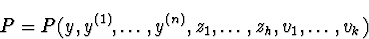
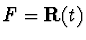
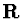
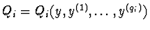
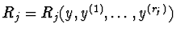
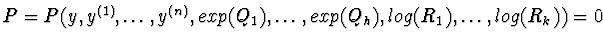
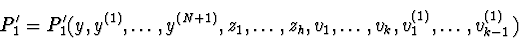
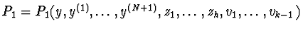
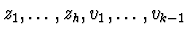
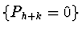

Let t be an independent variable and let y=y(t) be a dependent variable.
Let y(n) be the derivative of order n of y with respect to t. Let


field of rational functions with coefficients in
.Let zi=exp(Qi) and let vj=log(Rj), where

and
are polynomial functions with coefficients in the same differential field F for all
The equation  is equivalent to the system
is equivalent to the system

,
Let
 .
.
By algebraically eliminating
vk(1) between P(1) and
Rkvk(1)-Rk(1) and by using equalities
zi(1)=Qi(1)zi a polynomial

By algebraically eliminating vk between P and P1' a polynomial

is obtained.By using this procedure we can eliminate

and we obtain a polynomial Ph+k only in y and its derivatives, such that every solution of
.The same procedure can be applied to dynamical systems.
There are many differential elimination procedures. Some of them are based on
the characteristic set theory of Wu-Ritt [Ritt (1950,Kolchin (1973)]
[Wu (1987),Wu (1989),Wang (1993)];
other procedures use in addition the Gröbner bases theory for
polynomial ideals
[Boulier (1994),Boulier (1996)] [Boulier and Lazard and Ollivier and Petitot (1995),Diop (1991)]
[Diop (1991),Diop (1991),Diop (1992),Diop and Fliess (1991)]
[Fliess (1989),Fliess (1990)],
some others are based on the differential
resultants theory [Carra' Ferro (1997),Carra' Ferro (1997)] and the differential Gröbner bases
theory for differential polynomial ideals [Carra' Ferro (1987),Ollivier (1990),Weispfenning (1993)].